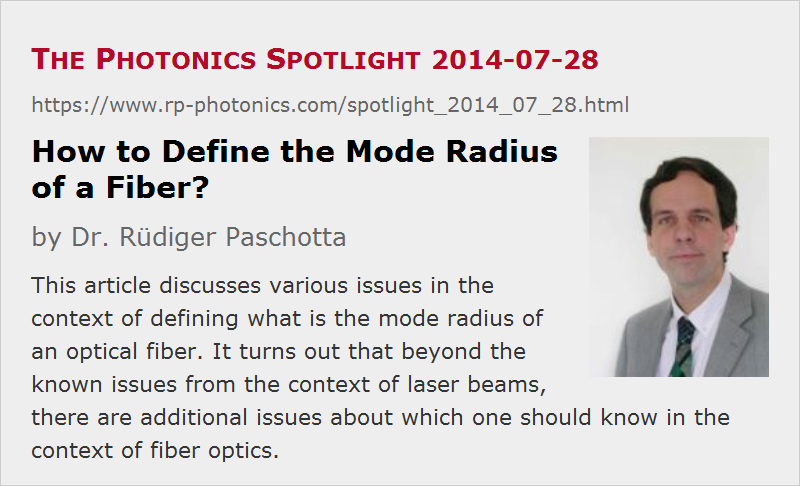

How to Define the Mode Radius of a Fiber?
Posted on 2014-07-28 as a part of the Photonics Spotlight (available as e-mail newsletter!)
Permanent link: https://www.rp-photonics.com/spotlight_2014_07_28.html
Author: Dr. Rüdiger Paschotta, RP Photonics Consulting GmbH
Abstract: This article discusses various issues in the context of defining what is the mode radius of an optical fiber. It turns out that beyond the known issues from the context of laser beams, there are additional issues about which one should know in the context of fiber optics.
Ref.: encyclopedia article on mode radius; M. Artiglia et al., “Mode field diameter measurements in single-mode optical fibers”, J. Lightwave Technol. 7 (8), 1139 (1989)

Most people who have worked with laser beams know that it is not entirely trivial to find a reasonable definition for the beam radius. Still, you might believe that exactly the same issues apply to the modes of optical fibers. After all, they have similar intensity profiles like laser beams, so why should any new issues arise in this context?
In the early days of fiber optics, one indeed used that approach and simply took the usual 1/e2 intensity criterion for fiber modes. As long as fibers were used which had approximately Gaussian mode profiles, this worked reasonably well. However, some of the fibers – in particular, some dispersion-shifted fibers – exhibited non-Gaussian intensity profiles, and this led to problems. Part of that was related to a common measurement method, where one records the far field intensity profile (which is somewhat simpler to get than the near field profile) and calculates the near field beam radius essentially from the beam divergence as calculated from the far field profile. For that, one uses a simple formula which is valid only for modes with Gaussian profiles. The mentioned formula then leads to a somewhat smaller result than a direct near field measurement.
From this you may actually draw the lesson that in case of doubt you should always do a direct near field measurement, i.e., determine a near field beam radius, ideally using the common D4σ criterion (see my encyclopedia article on beam radius). This, however, is also not true. It turned out, for example, that the beam radius as calculated from the far field divergence (which you may call the far field beam radius, or maybe more clearly the far field derived beam radius) is a better measure for the sensitivity of fiber splices to a small offset of the fiber cores. On the other hand, the beam radius directly measured in the near field profile allows better predictions concerning the sensitivity to angular deviations.
You can see that rather sophisticated issues are encountered in this context (about which the above cited paper of Artiglia gives a good overview). For sure, it is very desirable to know with which method a certain value for the beam radius has been determined. Unfortunately, it is a widespread habit in the industry to quote such numbers without revealing how they have been obtained.
Of course, coupling losses at fiber joints can anyway not be fully determined only from the two involved mode radii, as they depend on the full mode profiles. Only if their shapes are known, the beam radii are sufficient for calculating the coupling losses.
By the way, the near field and far field beam radii can of course also be numerically calculated for a given fiber design. Recently, I have enabled our RP Fiber Power software to calculate far field profiles, and from this you can of course also obtain the beam radius as explained above. You can then check yourself how much the beam radius values from the two definitions deviate from each other, and compare measured values with expected ones.
This article is a posting of the Photonics Spotlight, authored by Dr. Rüdiger Paschotta. You may link to this page and cite it, because its location is permanent. See also the RP Photonics Encyclopedia.
Note that you can also receive the articles in the form of a newsletter or with an RSS feed.
Questions and Comments from Users
Here you can submit questions and comments. As far as they get accepted by the author, they will appear above this paragraph together with the author’s answer. The author will decide on acceptance based on certain criteria. Essentially, the issue must be of sufficiently broad interest.
Please do not enter personal data here; we would otherwise delete it soon. (See also our privacy declaration.) If you wish to receive personal feedback or consultancy from the author, please contact him e.g. via e-mail.
By submitting the information, you give your consent to the potential publication of your inputs on our website according to our rules. (If you later retract your consent, we will delete those inputs.) As your inputs are first reviewed by the author, they may be published with some delay.
|  |
If you like this page, please share the link with your friends and colleagues, e.g. via social media:
These sharing buttons are implemented in a privacy-friendly way!